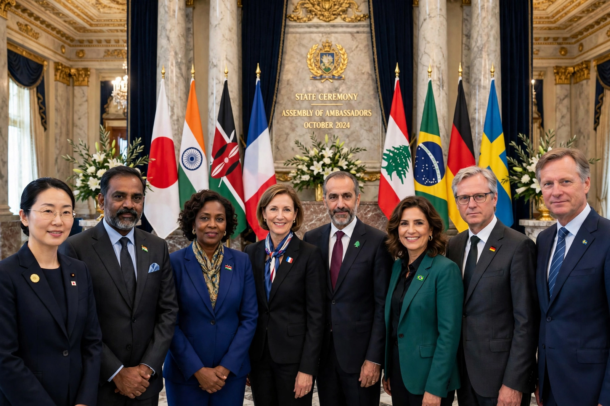

Diplomatic rank

Diplomatic rank is the system of professional and social rank used by diplomats. Disputes over precedence between representatives were a persistent source of friction in early modern Europe, and a standard hierarchy was codified by the Congress of Vienna in 1815, amended at Aix-la-Chapelle in 1818, and carried into the Vienna Convention on Diplomatic Relations of 1961.
Heads of mission
Article 14 of the 1961 Convention divides heads of mission into three classes: (1) ambassadors or nuncios accredited to heads of state, and other heads of mission of equivalent rank; (2) envoys, ministers and internuncios accredited to heads of state; and (3) chargés d'affaires accredited to ministers of foreign affairs. In modern practice nearly all resident heads of mission are ambassadors (or Commonwealth high commissioners of equivalent rank); the second class is largely obsolete. A chargé d'affaires heads a mission ad interim when the ambassador is absent, or permanently in a smaller mission.
Precedence among heads of mission in a capital is determined by the date and hour of taking up their functions, typically the presentation of credentials. In some Catholic countries the papal nuncio is traditionally recognised as dean of the diplomatic corps.
Diplomatic staff ranks
Within a mission, the customary descending order is: ambassador (or high commissioner); deputy head of mission, often titled minister or minister-counsellor; counsellor; first secretary; second secretary; third secretary; and attaché. Military, commercial, cultural and press attachés specialise by function. These grades roughly parallel promotion ladders in national foreign services, though titles differ by country.
Consular ranks
Consular officers follow a parallel hierarchy under the Vienna Convention on Consular Relations (1963): consul-general, consul, vice-consul and consular agent, in addition to honorary consuls. See also Consulate and Agrément.